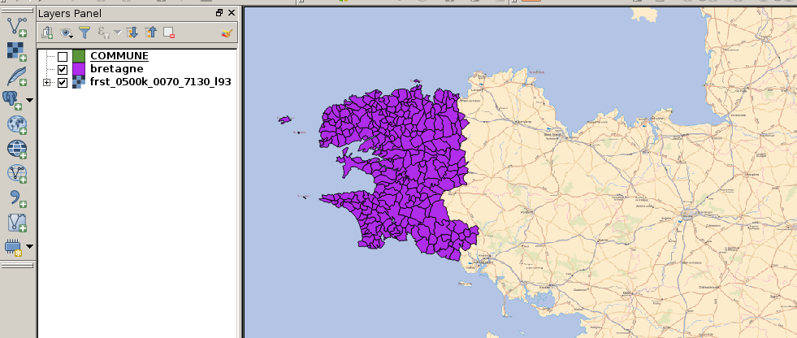

Composeur et atlas (1)¶
Composeur de carte
- Fournit des outils de mise en page et d’impression :
échelle, carte, légende, …
export (SVG, PDF, …)
Atlas
Création automatisée d’une carte pour chaque entité d’un couche virtuelle

Composeur et atlas (3)¶

1 - Avoir un shapefile des communes de Bretagne dans le canvas principal supperposé avec le même fond de carte raster que précédement.
{kind=link}
Composeur et atlas (4)¶
2 - Aller dans le composeur de carte et rajouter la carte principale zoomant sur la Bretagne puis ajouter une seconde carte servant d’overview d’un point de vue national
3 - Rajouter des éléments à la carte : échelle, légende, forme, flèche, image, …
4 - Labeliser la couche vecteur
5 - Faire un export.
Composeur et atlas (5)¶
6 - Faire un atlas avec un polygone “COMMUNE” comme entité de référence.
7 - Rajouter un deuxième overview d’un point de vue départemental.
8 - Rajouter un champs texte utilisant une expression affichant la densité de population de l’entité courante à partir de la superficie calculée par QGIS
9 - Imprimer l’atlas dans un PDF